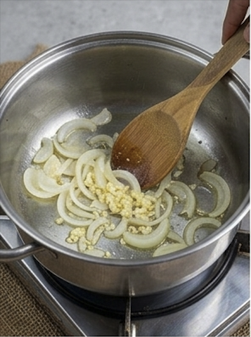

Pinakbet Tagalog Recipe

Description:
Pinakbet is a classic Filipino vegetable stew, originally from the Ilocos region. The name comes from the Ilocano word pinakebbet, meaning "shriveled," referring to how the vegetables are cooked down over low heat.
Ingredients:
- 1 tablespoon canola oil
- 1 onion, peeled and chopped
- 2 cloves garlic, peeled and minced
- ½ pound pork belly, cut into 1-inch cubes
- 1 tablespoon shrimp paste
- 2 Roma tomatoes, chopped
- 2 cups water
- ½ small kalabasa, peeled and cut into pieces
- 8 okra, ends trimmed
- ½ bunch long beans, ends trimmed and cut into 3-inch lengths
- 1 medium ampalaya (bittermelon), seeded, halved and cut into 1-inch thick
- 1 large eggplant, ends trimmed and cut into 1-inch thick
- salt and pepper to taste
Cooking Steps:
- In pot over medium heat, heat oil. Add onions and garlic and cook, stirring regularly, until softened.

- Add pork and cook, stirring occasionally, until lightly browned.

- Add shrimp paste and continue to cook, stirring occasionally, until it begins to brown.

- Add tomatoes and cook, mashing with the back of a spoon, until softened and have released juice.

- Add water and bring to a boil. Lower heat, cover, and cook for about 15 to 20 minutes or until meat is tender. Add more water in ½ cup increments as needed to maintain about 1 cup of liquid.

- Add squash and cook for about 2 minutes or until almost tender.

- Add long beans and continue to cook until tender-crisp.

- Add ampalaya, eggplant, and okra. Continue to cook for about 4 to 5 minutes or until vegetables are tender yet crisp.

- Season with salt and pepper to taste. Serve hot.